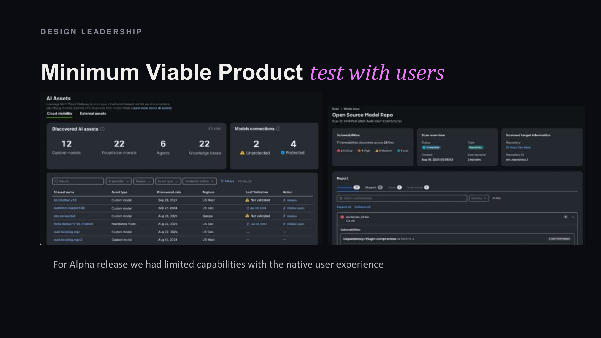
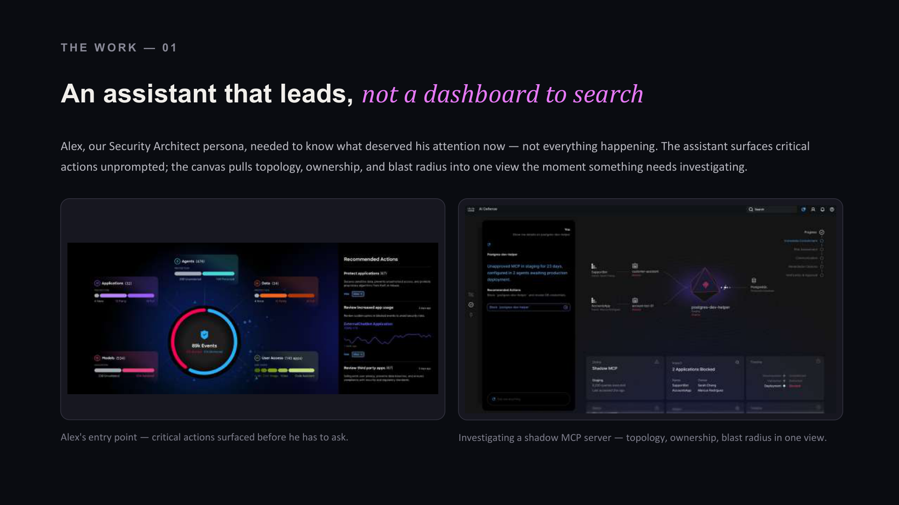
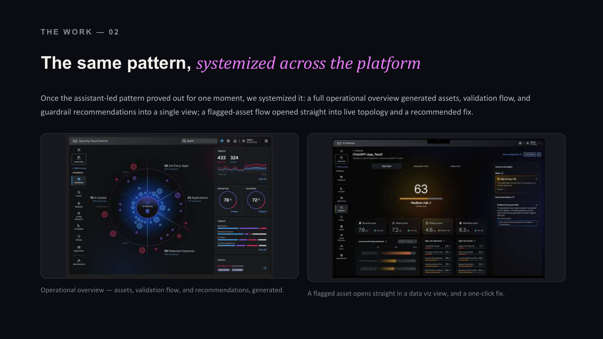
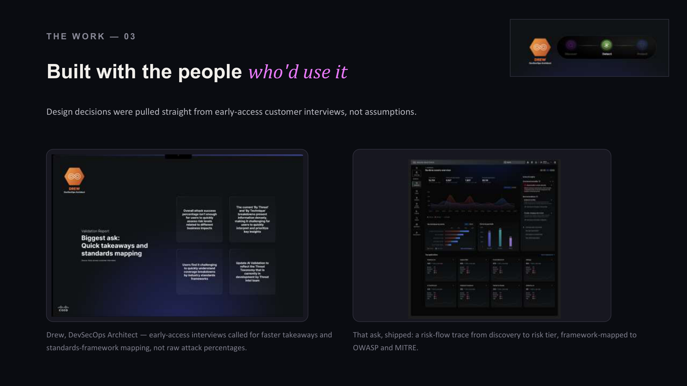
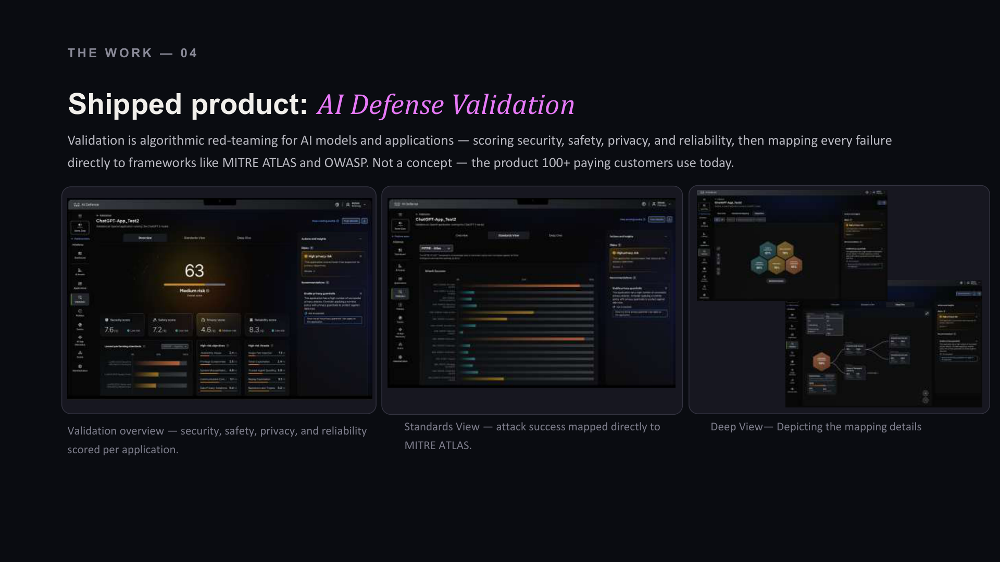

Traditional cybersecurity protects physical network
perimeters. Agentic AI requires protecting intelligence
itself. When enterprise adoption of Large Language Models
(LLMs) and autonomous agents broke standard security models,
Cisco AI Defense was conceived. This case study details the
0-to-1 product design and UX strategy for a specialized,
multi-layered security ecosystem built from scratch to
neutralize unprecedented safety, supply chain, and runtime
risks in generative AI architectures.
Enterprise UX
Network Security
Cisco
The Challenge
In April 2024, during a routine Tuesday 1:1, a new initiative was forming at the intersection of firewalls and AI. There was no scope, no defined outcome, and no research to draw on — just a conviction, shared across a handful of executives, that AI adoption was outpacing every existing security control Cisco had.
The mandate wasn't to extend an existing product line. It was to figure out, from nothing, what "defending AI" would even mean for an enterprise security company — while the technology itself was still changing month to month.
"We don't have defense systems in place for this AI wave via our existing next-generation firewall landscape."
Key Decisions
Four core calls shaped how this initiative was built in the absence of a traditional charter:
1. Staff for ambiguity, not a job description
The founding team of two was built around fit for uncertainty, not just seniority. The right first designer was chosen because the brief had no edges yet.
2. Skip discovery, lean on standing signal
With executive urgency real and no time for formal research, we substituted Customer Advisory Board conversations, TAC patterns, and telemetry for a discovery phase.
3. Let alpha feedback overrule the roadmap
When early feedback made clear that access management alone wasn't the product, we pivoted to re-scope around model and application validation instead of defending the original plan.
4. Extend the design system, don't replace it
Rather than building a new component library, we built on One Cisco and spent new design effort only on what it didn't yet have: agentic interaction patterns.
Design Leadership: MVP
For the Alpha release, we had limited capabilities with the native user experience. We focused on getting a Minimum Viable Product to test with users immediately.

AI Principles
Three north stars—Agency, Trust, and Quality—were the foundation every design decision had to ladder back to. In the product, these showed up as two defining qualities that run through the whole experience: personalization (the system learns how each user works) and generative UI (the interface builds itself around the task instead of a fixed menu).
Developing the AI Defense Platform
As the product vision matured from alpha to general availability, we focused on systemic, scalable interaction patterns that prioritized clarity and immediate action.
An assistant that leads, not a dashboard to search
Security Architects need to know what deserves their attention now. The assistant surfaces critical actions unprompted; the canvas pulls topology, ownership, and blast radius into one view the moment something needs investigating.

Systemized across the platform
Once the assistant-led pattern proved out for one moment, we systemized it: a full operational overview generated assets, validation flow, and guardrail recommendations into a single view. A flagged-asset flow opens straight into live topology and a recommended fix.

Built with the people who'd use it
Design decisions were pulled straight from early-access customer interviews. For example, early interviews called for faster takeaways and standards-framework mapping, not raw attack percentages. We shipped a risk-flow trace mapped directly to OWASP and MITRE.

Shipped product: AI Defense Validation
Validation is algorithmic red-teaming for AI models and applications — scoring security, safety, privacy, and reliability, then mapping every failure directly to frameworks like MITRE ATLAS and OWASP. This is not just a concept, but the live product over 100 paying customers use today.

The Results
Within nine months, the team went from concept to general availability, positioning Cisco as a category leader and setting a new interaction and visualization bar.
9 months
0→1, concept to GA
100+
paying customers
10,000+
AI builders using AI Defense Explorer
1,500+
GitHub stars in 4 weeks
What Made It Notable
The hardest problems on this project weren't screens. They were organizational — and design leadership decisions outside the Figma file mattered as much as anything inside it.
→
Capacity before headcount: The first year ran on a shared design resource pool borrowed across the Firewall org; only once the bet was proven did I build the case to hire dedicated designers.
→
Systemizing craft, not reinventing it: Building on Cisco's existing design system freed new design effort for the interaction patterns that were actually novel.
→
Storytelling as the operating model: Every design review was framed as a persona's problem and its resolution, keeping engineering and executives aligned sprint after sprint.
→
Risk owned at the leadership level: Committing shared capacity to an unfunded, unscoped bet, then asking for permanent headcount before the product shipped, is a call only a design leader is positioned to make.
Reflection
Category creation doesn’t start with a strategy deck.
It starts with a small group of people who refuse to accept the current framing of a problem. That's the operating belief this project left me with as a design leader — and the one I bring into every zero-to-one bet since.